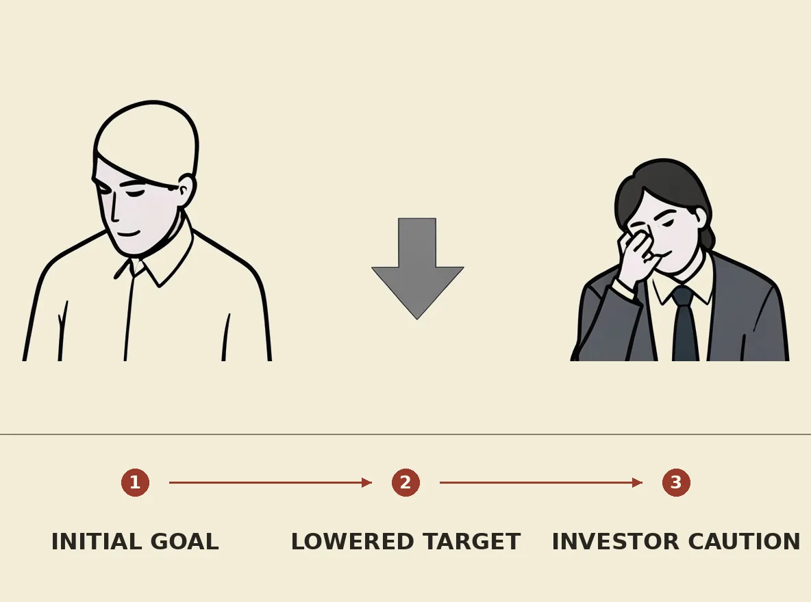

OpenAI has reportedly lowered its funding target for a new investment round from an initial $30 billion to $20 billion, with $11 billion secured so far. The company previously aimed for a $1.4 trillion valuation, later adjusted to $1.25 trillion, but has faced a "tepid" response from some large investors. This development suggests growing investor caution regarding heavy AI infrastructure spending and broader tech stock sell-offs, potentially impacting future fundraising for AI companies like OpenAI.